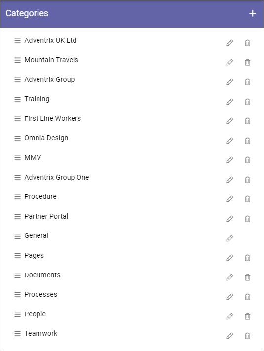

Categories (Property)¶
In Omnia v6 you can categorize properties for example to make it more onbvious what different properties are for.
Here’s an example of a list of categories:
Use the pen to edit a category or the dust bin to delete it.
You can also change the order in wich categories will be shown in varioues list. Just grab the titel and move the category to the desired position.
Create a new category¶
To create a new category, do the following:
- Click the plus.

- Type a Titel (Name) and save.

The field “Order” displays the order set in the list when the category is edited, where 10 is the top position, followed by 20, 30 etc.